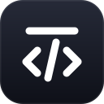

Tweak any HTML page by clicking it
Open an .html file, click an element, and change its colours, borders, size or position. Save writes a clean HTML file.
or drop a file anywhere on this window
Drop to open

TweakerrOpen an .html file, click an element, and change its colours, borders, size or position. Save writes a clean HTML file.
or drop a file anywhere on this window